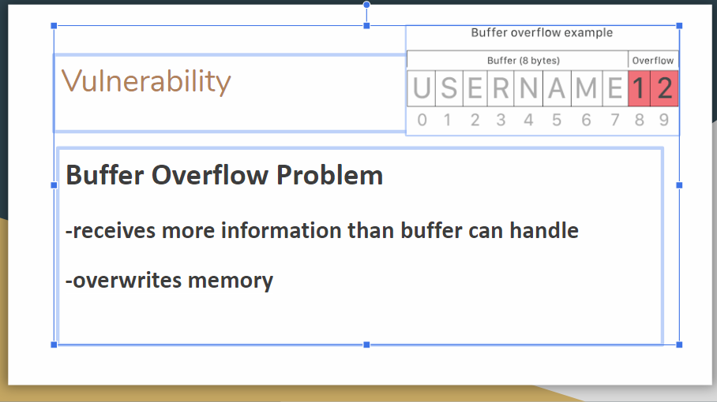

Our game is a choice based adventure game that was made on Scratch using its language. The purpose of our game is to explore as you try to get of an island. As you are exploring you are faced with a series of choices that have “good” and “bad” options. The choices you make affect your “karma” which is a variable that keep track of positive and negative choices. Your overall karma at the end of the game decides the games ending. In this video we see the title screen, character selection, introduction, and some of the choices that can be made.
We designed our app using MIT app inventor which uses a block based programming language. Our app was designed to serve as a tool to help track and log your excretory system. The main purpose of our app was to identify and log ones excrement in order to show your doctor when needed. Our app records the amount of time spent on the toilet and the type excrement. This app will provide information about a person’s bowel movement to a doctor that the doctor previously couldn't have accurate information about before. The doctor can use this information in different diagnoses and diet recommendations. Our video starts with the timer being started. Then we see the time being saved and the 7 different types of excrement of the bristol stool sample appear. After the stool type is selected the screen, gets changed to the home screen and then the log screen. The update button is pushed and the stool type and time is added to the log.
The purpose of our program that we created was to give the user an interactive fiction story that is affected and changed based on user input and choices. In our video you see the user go down one path of the story to get a certain ending.
This is a python code that calculates your gpa based on letter grades.
We looked at spotify music data in order to find trends. This pie chart show which genres have the most top hits.
We chose to work with the rabbit model because we had an interest in the biology category, and thought that exploring the environment of rabbits would be exciting. We were very fond of watching the rabbits thrive, but this soon got old and we wanted to add something new that would kill them off.
I made a presentation that explained the code red virus. I explained that code red is a ddos attack. I also talked about vulnerability.
The programming language i used to create this game was Scratch. This video shows the game running. The purpose of this game is to catch as much falling fruit as possible in the the allotted time. There are different values to each fruit, so different fruit increases your score differently. There are also obstacles to avoid, and a time boost that gives you more time to catch fruit and increase your score. This is intended to be a fun, casual game to be played on your spare time.
The innovation that I am choosing to base my visual artifact on is 5g network. What my visual artifact shows is some of the many things that a 5g network can be used for. The goal of this visual artifact is to display the purpose of 5g. The purpose/function of 5g is to have “faster speeds and more reliable connections,” according to Mike Moore.